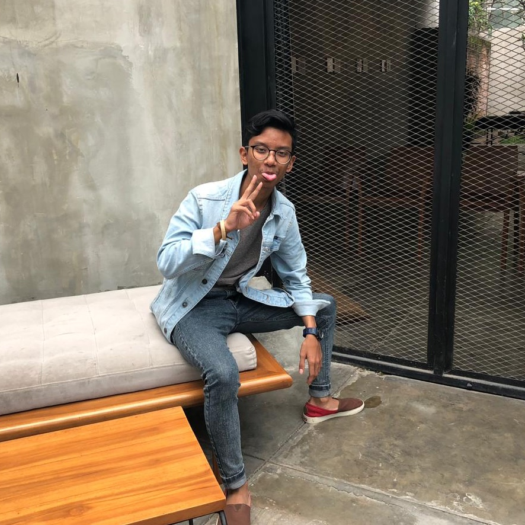

Hola Amigos! I'm
RADHIN
Currently pursuing study on Informatics Engineering

From 2018 until now, I'm one of informatics engineering student in Institut Teknologi Bandung. Everyday, I wake up and sit in front of my laptop hoping to succeed on this studying process. I really like pursuing this study especially at Frontend Engineering and UI | UX designing. Hope the best for me!
I already love world of football since I was 5 years old! Since then, I always spare my time to watch football whether it's live matches or just highlights on online streaming sites espescially when Chelsea FC and Persib Bandung play. Whenever they play, I will watch them!
I do this thing when I have little more spare time after watching football. I'v been a gamer since a long time ago though. I like to play anykind of game whether it's First Person Shooter, MMORPG, Strategy, Single-Player, or Multiplayer Games. But, I like sports game better than anything else on the market. FIFA, NBA2k, and Madden NFL are my favorites.
After my third year pursuing Informatics Engineering Study, finally I like something spesific like UI | UX Designing. I like it a lot to the point that in a week, I could join 2-3 courses about this speciality! Still not reaching "good enough" on this skill, but I like it a lot! I'm a man on a mission.
Hello, I'm Radhin!
I was born and raised in Bandung, Indonesia. Since I was born, I never leave this
beautiful city. Bandung is a unique city in Indonesia. People remember this city
for it's contribution in world peace by hosting the Asian-African Conference on 1955.
Maybe that's why this city is gathered by lovely and peace people.
Currently, I'm pursuing my bachelor degree of Informatics Engineering at Institut
Teknologi Bandung. When I first decided to take this major, I don't really know
about Informatics Engineering itself. But, the more I learn about this major, the more
I love Inforamtics Engineering and currently, I found what makes me want to stay
at this major. UI | UX Designing especially about the User Experience. I found it
interesting about how people think about something people serve for them and how user's
mind react when they see something. Maybe, being raised by my lovely parents who pursue
Psychology have some parts about it too.
Outside studying Informatics, I like football a lot! Whether It's playing or watching,
I'm always down to football. Besides that, I like to play video games so much! I'm not
wasting all my time on it but when I have some spare time, I like to refresh my
mind and soulbyn playing video games. I like to play it with my friends better though.
By the way, I always love to meet people out there! So, reach out to me and let's talk!
Or simply click one of these social media below.
Ciao!


Copyright © Radhinansyah Hemsa Ghaida.
Icons made by Freepik from www.flaticon.com and fontawesome.